Project information
- Category: Data Analysis
- Project date: 30, August 2022
- GitHub URL: GitHub project page
- Tableau URL: Tableau Dashboard
- Presentation Slide: Presentation Slide
With an estimated twelve million visitors each year, Barcelona is one of the best-known and most visited cities in Europe. This city is famous for its outstanding football team, stunning architecture, lively nightlife, sandy beaches, and world-class cuisine. Not to mention a vibrant cultural heritage and colorful neighborhood festivals that attract visitors and settlers from around the world. Barcelona regularly features in the annual lists of the world’s smartest cities and most foreign resident originally moved there with the intention of staying for a couple of years but ended up enjoying the lifestyle so much that they ended up staying. Hence, for this project, I felt it would be interesting to gain an insight about the pricing of residential house in this marvelous City.
"How much should this house cost? ".
"How can we better estimate prices?".
This question were especially interesting to me in the context of this real estate data analysis project, the first step is to gather the data needed to answer it and develop a modeling plan. I got my data from scrapping housing detail from www.thinkspain.com and carried out various data and model Analysis to provide answers to the questions above. I also needed to carry out price prediction Analysis from various house advertising description details, hence, used the opportunity to learn about Natural Language Processing (NLP)
The articles in this series dive deep into each step in this project, including data preparation, modeling, and iteration based on evaluations of the models in order to find the best possible model for predicting Barcelona province real estate prices
Project Strategy
This project had several facets outlined in the flow diagram below.

The Python libraries used include Pandas (for data cleanig and manipulation), BeautifulSoup and request (for Web Scrapping), NLTK (Natural Language Toolkit for text analysis), GEOPY (for locations geocoding analysis), MatPlotlibe(for data visualization), Word Cloud ( for text visualization), sklearn (for model analysis), and other built-in libraries.
Web Scrapping
This was probably the most arduous part of the project because, unlike my previous projects, where I had existing datasets, I had to build this one from scratch. To do that, I used the Beautiful library for Python to scrape data from www.thinkspain.com.
Web scraping can be tiresome. That is because web scraping truly depends on how clean the html code underlying the website is. The Real Estate observations which are scraped for this project are divided into different areas in Spain. That means in order to find and group every property for each area, it is first necessary to find all the URLs associated with that individual area. The strategy of the scraping then starts with first finding all the links to each province and click on the Barcelona province, then secondly is to find all the url of various locations within the Barcelona province and scrape all the relevant property information for each location.
The data for this project was scrapped on the 11th of August, I concentrated on data from houses that has details on Bedroom, Bathroom, Building size and plot of land and skip data on house that doesn't have details for this 4 variables for uniformity sake. All of this data was extracted from the very first web page of various locations within Barcelona province
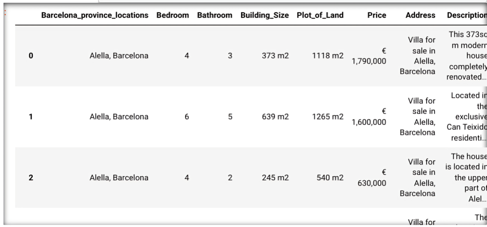Data Cleaning
Cleaning up your data is very vital because it helps to prevent errors in your analysis. In this section, I remove the “m2” and “€” from the Building size, Plot of land and Price column and furthermore, I converted the columns from an object columns to an int columns.
Data Exploration
Under this section, I carried out different data analytic task which includes :
- Location geocoding
- Outliers detection and remover
- Natural language processing analysis
- Word cloud
Location geocoding
For my final dashboard, I wanted to add a map that shows Cluster grouping of different houses with same similarities within Barcelona province. Tableau needs basic geographic information to archive this. To further retrieve my longitude and Latitude data from each location within the province , I made use of GEOPY, a library in python that takes a country/city name as input and produce the corresponding longitude and Latitude as output
Outliers
Outliers are data points in a dataset that are considered to be extreme, false, or not representative of what the data is describing. These outliers can be caused by either incorrect data collection or genuine outlying observations, the figure below shows a representation of outliers in Bedroom column
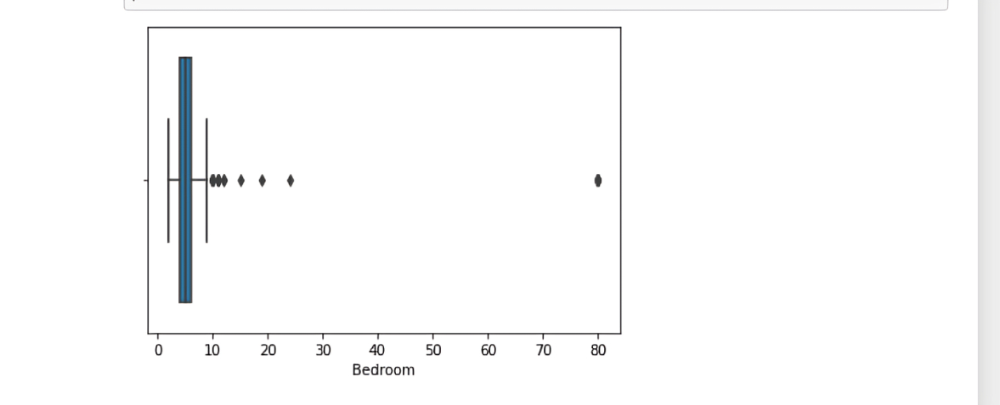It is clearly visible that the data are heavily skewed to the right. This means that most of the data is centered at the left side of the distribution, with fewer observations on the right side. This occurs because of :
Despite the fact that the website is supposed to show only valid houses and estates, there are still some properties which are not valid and skew the distribution drastically to the right, like large commercial properties such as hotels and restaurant spaces. We can see from the graph above that there are apparently several observations with more than 10 Bedroom. These are definitely not features one would expect to see in an ordinary residential house .
To get rid of the outliers, I made use of the Interquartile Range Method for my Outliers remover. The interquartile range approach first calculates the interquartile range (IQR) of the data. The IQR is defined as the difference between the 75 and 25 percentile of a variable. This IQR is then multiplied with 1.5. Any data that is then further away than the 75 percentile plus 1.5IQR or 25 percentile minus 1.5IQR is classified as an outlier.
After carrying out the above analysis, it was found that according to our data , any house with Bedroom less than 1 or greater than 9 should be considered an outlier and hence should be drop.
Natural language processing analysis
Natural language processing (NLP) is a field that focuses on making natural human language usable by computer programs. In this section, I Analyze and made exploring Analysis on each house advertisement descriptions using NLP pre-processing and visualization techniques.
Each real estate listing scraped contains a text component, the ad description. The descriptions are actually previews of the full descriptions, scraped from the listing page. The description text helps to explain what the numbers alone cannot. For example, two house with similar details such as same numbers of bathroom, bedroom etc may have different price tag, hence Price differences of such a houses with identical feature values make it very difficult for the model to learn. Looking at the description of each house explains the price difference: the house with the highest price may be located directly on a beach or have great mountain view. This is an important information that will help our model learn to better predict these prices.
After scraping the description preview for all real estate listings, I was left with text samples that looked like this:
- “ Exclusive home located in one of the towers of Diagonal Mar, within the Illa del Cel complex. Residential complex that enjoys a large swimming pool, garden area, playground and 24 hour security. All this, just a few minutes from the sea and access to the coastal ring road, for quick communication in and out of Barcelona. Fantastic apartment with excellent distribution and without loss of sqm, as it does not have large corridors or passageways. The day area consists of an entrance hall with a built-in wardrobe, a fully equipped kitchen open to the living-dining room, all a large 33 sqm space with access to a 15 sqm terrace facing the sea. The night area has 2 bedrooms with built-in wardrobes and also exterior to the terrace (1 type suite with bathroom) and 2nd bathroom with bathtub. Heating, central air conditioning through ducts and optional parking space for 25.000€. “
- “ Bran new flat in El Born, just 10 meters from the Basilica of Santa Maria del Mar, in a historic 16th-century building that has been fully restored and equipped with a communal roof terrace, small pool, barbecue and charming chill-out area. The apartment has a large living-dining room and open plan kitchen, exit to balcony overlooking a refreshing vertical garden, 2 bedrooms (1 suite with bathroom) and a 2nd bathroom. Top quality finishes, natural parquet, aerothermal, double glass carpentry. Located in the old town of Barcelona, next to the basilica, in one of the most emblematic streets of the Born neighborhood. The Ciutat Vella district is the oldest nucleus of the city, the historic center with an ideal charm and atmosphere for dreaming and transporting us back to ancient times, which has also, in recent years, become a booming area, increasingly open to the Mediterranean. A modern, multicultural and delicious neighborhood to enjoy every day in its narrow, twisted and intertwined medieval streets”
My goal was to use the information from this text Analysist to help my model predict real estate prices.
The steps taken for analyzing the text data are as follows:
- Tokenize the data
- Lemmatize the data
- Get n-grams
- Visualize
- Repeat
Tokenization
Tokenization involves splitting text into its smallest components, called tokens. Tokens are the building blocks of a sentence that, when combined, give text its meaning. In this step, I split each house description into individual word text, I also removed any tokens representing punctuation or known English stop words.
Lemmatization
Once I had the text split into its component tokens, the next step was to make sure these tokens contain as much information as possible for the model to learn from. There is common way to do this: lemmatization. This is used to reduce words to their root
create n-gram
After tokenizing and lemmatizing the words, I extract n-grams. N-grams are token groups of n words that commonly appear together in a document. A unigram is just one single word, a bigram contains 2-word groupings, and so on. N-grams help us to quickly identify the most important words and terms in our descriptions.
Visualization
Next, I visualized which words were the most important and asked the question: “are these words going to help my model learn to estimate price? How can they better support the model’s understanding?. Below are the initial n-gram plots, plotted with words from the entire corpus of advertisement description
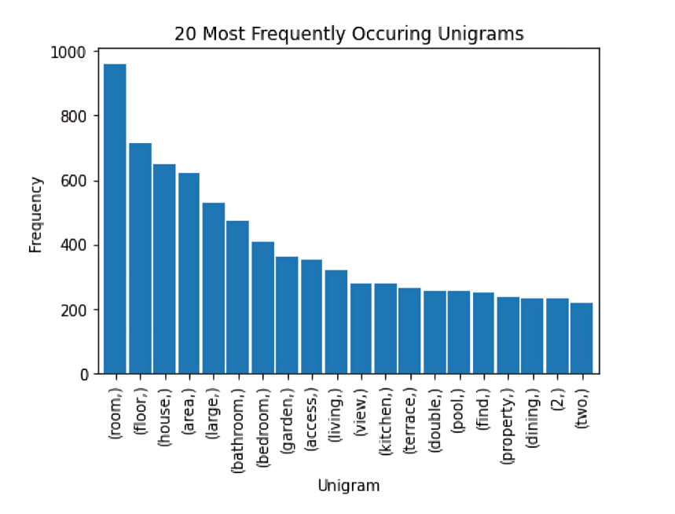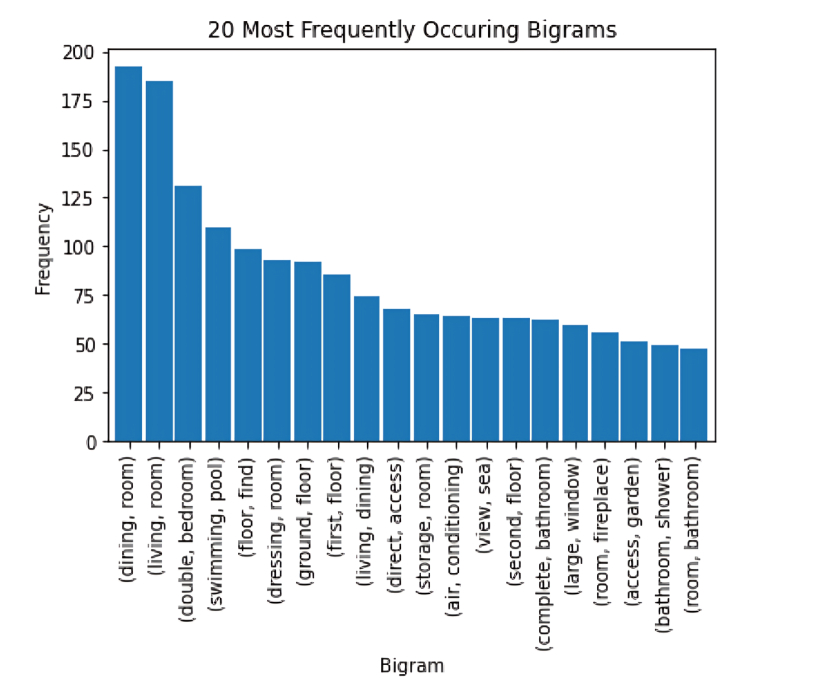
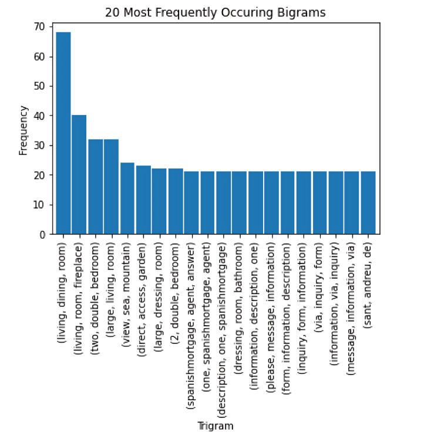
The most common uni-, bi- and tri-grams are “room", “dining” “living" , "bathroom”. These are all typical real estate-focused words, and many of them are likely not going to help us in our model’s prediction of price.
Repeat
After looking at my initial visualisations, i decided to add the following steps in my text pre-processing pipeline: Remove additional real Estate words and repeat the process
real_estate_stopwords = [ "area","province", "location", "plot", "hectare", "m²", "m2", "sq", "sale", "square", "meter", "bedroom", "bathroom", "room", "living", "kitchen", "hallway", "corridor", "dining", "pool", "apartment", "flat", "floor", "two", "house" ]
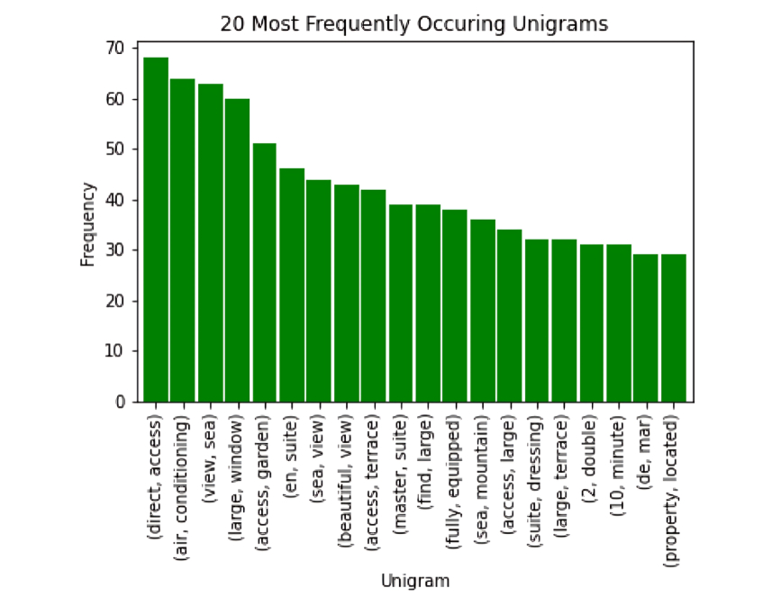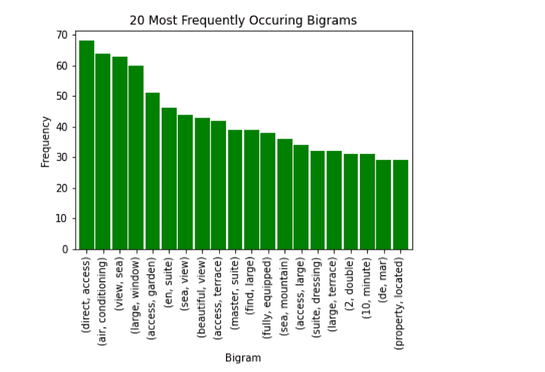
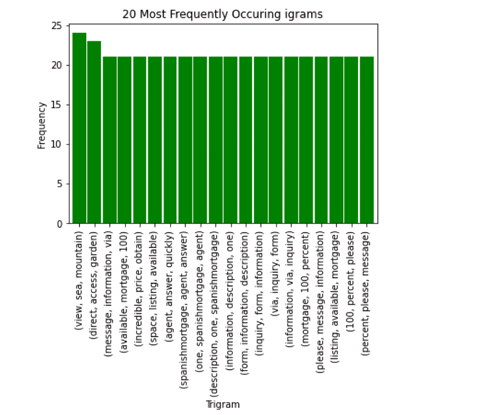
After adding these steps to our pre-processing pipeline, the n-grams became much more interesting: The bigrams and trigrams are no longer dominated by words like bedroom and bathroom. They now contain price-relevant terms like “sea view”, “mountain", and "garden” .
Word cloud
A word cloud is a collection, or cluster, of words depicted in different sizes. The bigger and bolder the word appears, the more often it’s mentioned within a given text and the more important it is. In this section, I did a world cloud view on the entire description text column , also did another on the 10 least expensive houses and another on the 10 most expensive houses
entire data set:

least 10 expensive:
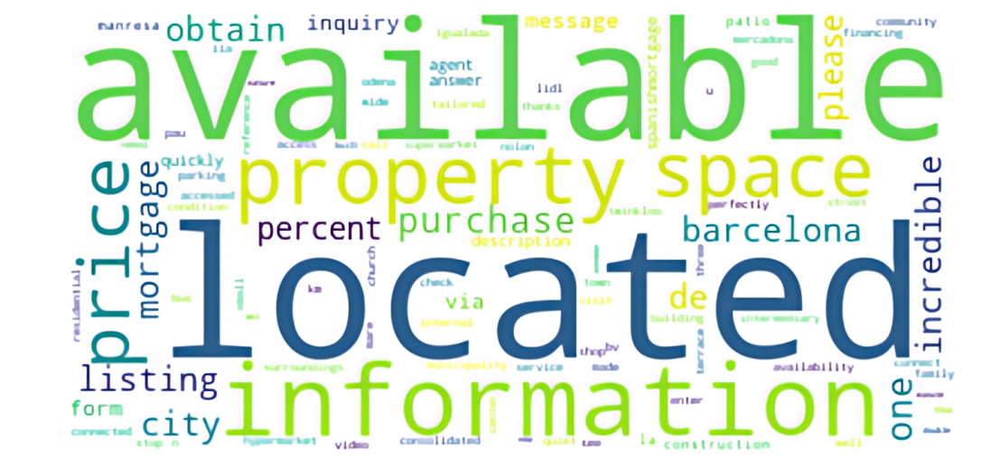10 most expensive:
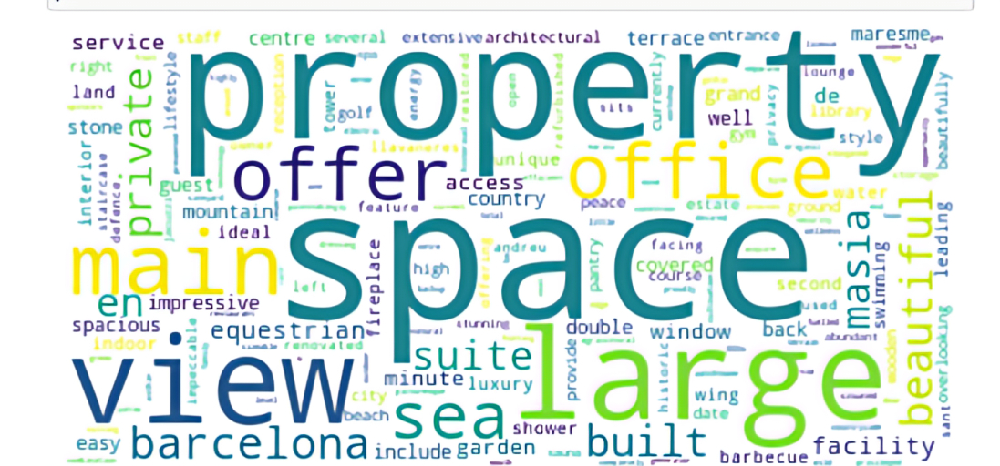we can clearly see a stark difference in the most common words. In the expensive houses, we have words like view, sea, space, office, all of this words are the characteristics of an expensive house and this are not found in the least expensive house above.
Model development
- In order to carry out the price model analysis based on the numerical details provided in the data , I first of all did a heat map chart to find the correlation between all the numerical variables and from the chart , it was evident that Building size with a correlation Price fit of 0.73 is the best single data fit according to the dataset to predict house Price. 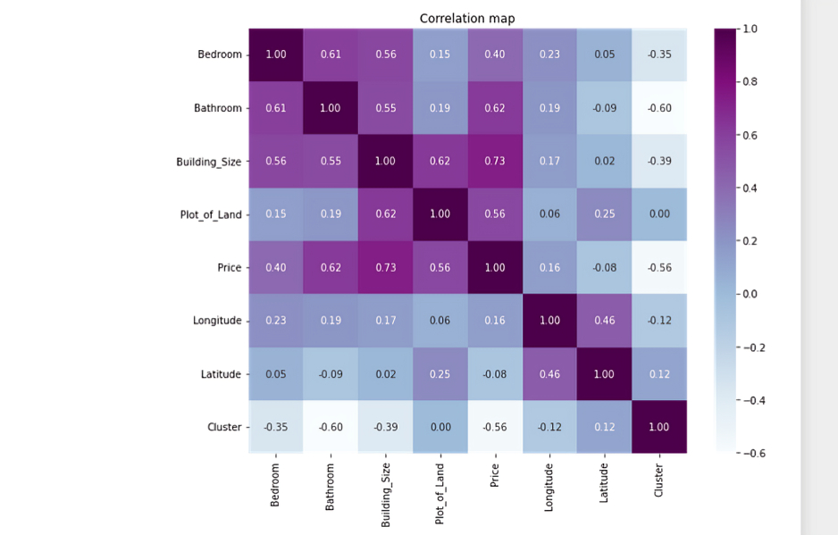
- I used K-means cluster machine algorithm to group the different houses into a cluster of 3. From the data ,177 house have same similarities and falls under cluster 0, 73 falls under cluster 1 and 5 in cluster 3
-
I compare between Random Forest Regression and Multiple Linear regression, which was best for price prediction according to the available data. Using mean square error and r square error, it was shown that Multiple Linear regression was best for our price prediction. From the Multiple Linear regression Analysis, I arrive at the equation for price prediction
Price = -209305.18169746455 - 136257.431*Bedroom + 370853.87*Bathroom + 1515.72902*Building_Size + 2.66810689*Plot_of_Land
Check my Jupiter notebook for further details.
Price prediction base on NLP text
For the NLP Machine Model, I used Bags-of-words and TF-IDF to carry out my NLP Machine model
-
bag-of-words
bag-of-words procedure falls under a broader category of techniques known as count-based representations. These are techniques to analyze documents by indicating how frequently certain types of structures occur throughout. I created a word-document co-occurrence matrix for the Description_new_text column using the "CountVectorizer" class that automatically accounts for certain preprocessing steps like removing stopwords, stemming, creating n-grams, and word tokenization and furthermore used LogisticRegresssion technique to train and test the model. From the model, I did an interpretable features form in terms of words that contributed the most to expensive and not so expensive sentiment:
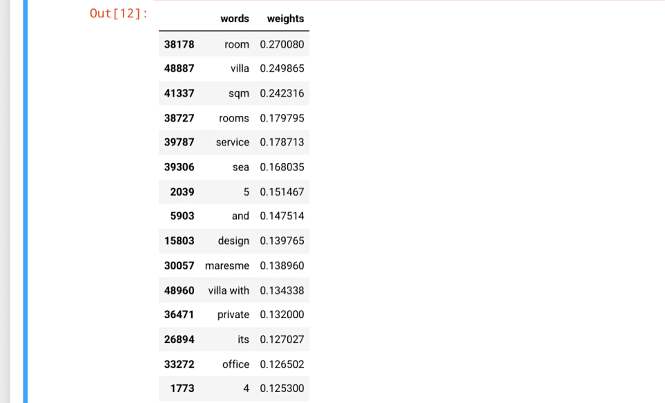

Calculating the key performance matrix , this price prediction model produce an f1 score of 0.55555555555
-
TF-IDF
Frequency-Inverse Document Frequency (TF-IDF) evaluates how important a word is to a document within a large collection of documents (i.e. corpus). The importance increases proportionally based on the number of times a word appears in the document but is offset by the frequency of the word in the corpus. I created a word-document co-occurrence matrix for the Description_new_text column using the “ TfidfVectorizer” class that automatically accounts for certain preprocessing steps like removing stopwords, stemming, creating n-grams, and word tokenization and furthermore used LogisticRegresssion technique to train and test the model.
Calculating the key performance matrix , this price prediction model produce an f1 score of 0.1666666666
Comparing the two NLP modelling method, Bag-of-word model is a better model to predict Price from house advertisement texture data
Check my Jupiter notebook for further details.
Tableau Dashboard

I made use of Tableau to create a user-friendly interactive dashboard, where houses with similar characteristics are group into clusters. This allows you to explore the house details, filtered by locations. Please note that while the dashboard can be viewed on any device, it is preferable to view it with a Tablet or a Computer.
Conclusion
We started this data science project with a seemingly simple question — “What is the price of this property? How can we improve our price estimations?”
The past articles in this series have shown the work needed to answer this question. After gathering data from the real estate web using web scraping, a significant amount of time was spent cleaning the data and extracting the features needed for modeling. We tested multiple modeling method which including Random Forests, Multiple Linear Regression, Bags-of-words and TF-IDF modeling technique. Multiple Linear Regression standout to be the best for price prediction based on Predictor variable such as numbers of Bedrooms, Bathroom, size of Buildings and size of Land while Bags-of-words standout to be the best for price prediction based on description text prediction variable.
With our final models, and the data understanding we’ve gained throughout this project process, we can now answer our original question of which factors are most influential in predicting the price of Barcelona real estate, and how we can improve our estimation. The features building size and bathroom were highly correlated with Price of various houses, including the house descriptions gave us great insight into the condition of the property and this further greatly improved the model.
REMARK
All the references used were hyperlinked within the article. For the complete Python code written on Jupyter Notebook, GitHub, Tableau Dashboard and my social media pages, please use the links below: